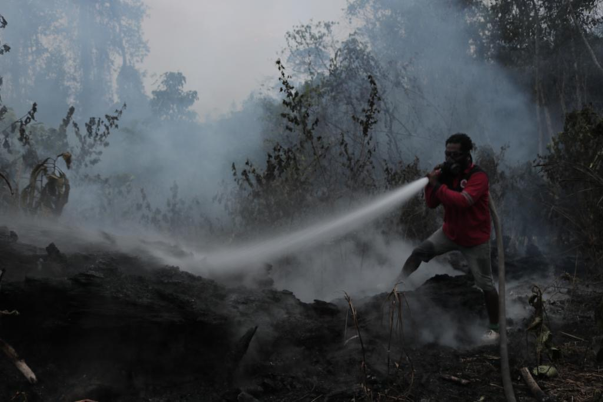

保护行动

森林转换是对婆罗洲森林砍伐影响最大的。特别是大公司。大规模的转换的后果是野生动物栖息地的丧失，
通常社区和野生动物之间的冲突由此而开始，因为栖息地的丧失意味着食物来源的丧失，因此野生动物会在社区农业区寻找食物，从而导致了社区的损失。
“我们的目的是通过与社区和政府的合作计划来保护具有高保护价值的森林。鼓励公司更加关注环境。”
CAN Borneo致力于打击破坏环境的犯罪，记录和揭露与森林砍伐有关的案件，并报告给有关当局共同采取行动。与社区合作创建一个受保护的森林区域，并鼓励公司为野生动物创建一个保护森林和走廊。